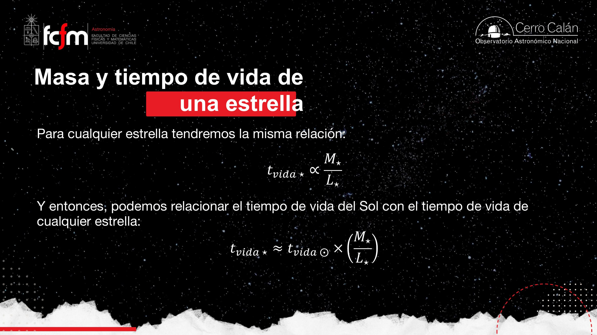
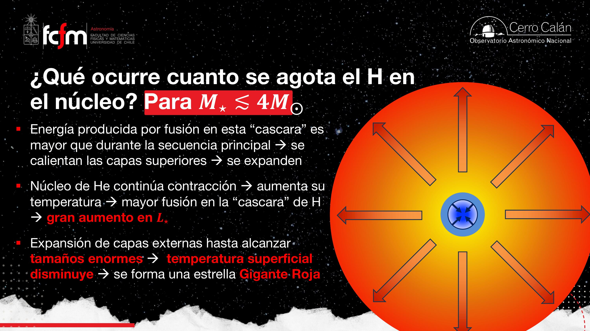
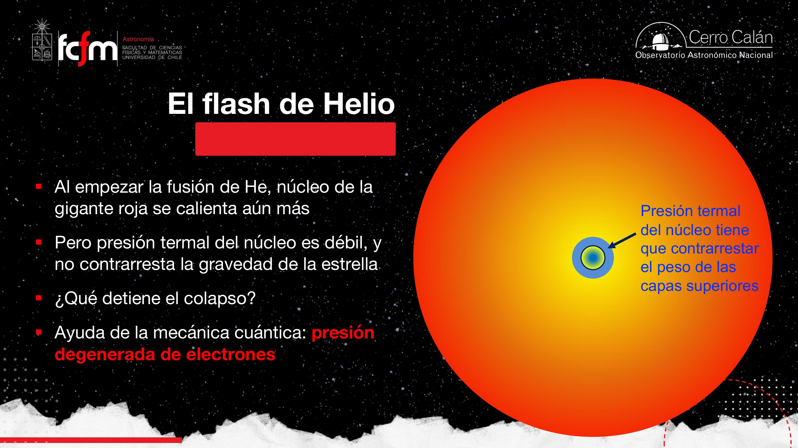
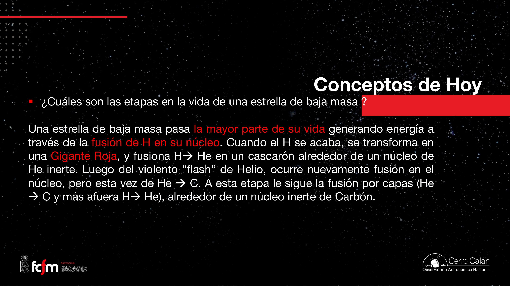
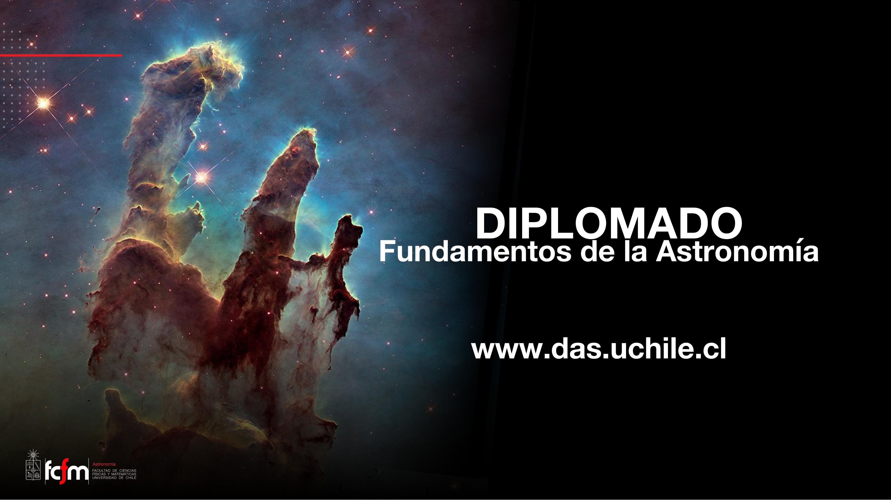

Evolución estelar I — estrellas de baja masa
Del diagrama HR y el tiempo de vida en secuencia principal hasta la gigante roja, el flash de helio, la rama asintótica y la muerte suave: nebulosa planetaria y enana blanca. Rango de esta clase: M ≲ 4 M☉.
La evolución estelar es la historia de cómo una estrella cambia con el tiempo: qué fusiona, cómo transporta energía, cómo se equilibra contra la gravedad y qué deja cuando muere. La masa inicial es el parámetro dominante: no solo fija el brillo y la temperatura en la secuencia principal (MS), sino también la velocidad del recorrido y el destino final. En esta clase nos concentramos en estrellas de baja masa (hasta unas 4 masas solares): el Sol, Próxima Centauri, Spica en el límite superior del rango. No explotan como supernova; terminan como enanas blancas envueltas en una nebulosa planetaria. Todo el módulo III gira en torno al diagrama HR como mapa de esa biografía.
Diagrama HR y clases de luminosidad
Temperatura (o color) versus luminosidad: el mapa de la vida estelar.
El diagrama de Hertzsprung–Russell (HR) relaciona la luminosidad de una estrella con su temperatura efectiva (o, empíricamente, con su color o magnitud). Cada punto es una estrella; en una muestra grande aparece una secuencia principal diagonal: estrellas que fusionan hidrógeno en el núcleo. Esa es la “vida adulta” estelar.
Además del tipo espectral (O, B, A, F, G, K, M…), los astrónomos usan clases de luminosidad (I, II, III, IV, V…): enana, subgigante, gigante, supergigante, enana blanca. El nombre puede confundir: no siempre implica “más brillante que otra”, sino una etapa evolutiva en el diagrama. Cuando hablamos de “gigante” o “enana blanca”, nos referimos a esa clasificación, no al tipo espectral.

En clase se mostró un video de la Agencia Espacial Europea sobre el cúmulo globular ω Centauri: al ordenar miles de estrellas por color y luego por brillo, el diagrama HR “aparece mágicamente”. Ese cúmulo es uno de los más masivos de la Vía Láctea; se sospecha que podría ser el núcleo de una galaxia enana que la Vía Láctea absorbió.
El diagrama HR es un espacio de estados en variables observables (T, L). Una estrella no salta al azar: sigue trayectorias determinadas por la masa y la física interna, como un sistema dinámico que evoluciona en un plano de fase. Las isócronas (más adelante) son curvas de nivel de “edad” en ese espacio.
Relación masa–luminosidad y tiempo de vida en MS
Más masa ⇒ más brillo ⇒ vida más corta: t ∝ M/L ∝ 1/M³.
En la secuencia principal existe una relación empírica muy útil (válida solo en la MS; no aplicar a una gigante roja):
¿Por qué? Más masa implica más gravedad; para mantener el equilibrio hidrostático la estrella necesita mayor presión, de ahí mayor temperatura central y una tasa de fusión nuclear (reacciones por segundo) mucho más alta. La luminosidad es energía liberada por unidad de tiempo.

Tiempo de vida en secuencia principal
Definimos el tiempo de vida en MS como el tiempo que la estrella brilla fusionando hidrógeno en el núcleo con la luminosidad típica de esa fase. No es toda la vida hasta la muerte, pero es ~90% del total para estrellas como el Sol.

Las estrellas masivas en la MS son como una F-150 bencinera: queman combustible rapidísimo. Las enanas rojas son un Suzuki Celerio diesel: poco brillo, autonomía enorme. Spica (~10 M☉) es el “Kurt Cobain” del cielo; Próxima es el viaje largo.
Si la vida terrestre tardó ~3.800 millones de años en pasar de microbios a civilización, una estrella O con solo ~1 millón de años en MS no da tiempo para un recorrido parecido al nuestro. Por eso la búsqueda de vida inteligente suele enfocarse en estrellas de vida larga (espectrales F, G, K, M).
Transporte de energía: radiativo y convectivo
Cómo la energía sale del núcleo depende de la masa — y afecta la eficiencia.
La energía generada en el centro debe llegar a la superficie. Hay dos mecanismos principales:
- Transporte radiativo: los fotones se absorben y reemiten capa a capa (como una “estufa” que irradia hacia afuera).
- Transporte convectivo: celdas de gas caliente suben y frío baja (revuelo, como hervir agua).
En el Sol: el interior (~0–70% del radio) es radiativo; hacia afuera hay una zona convectiva superficial. Las estrellas menos masivas que el Sol (enanas rojas) son totalmente convectivas del núcleo a la superficie. Eso mezcla el hidrógeno: el combustible de capas externas puede llegar al centro. En el Sol, el H de las capas externas no se mezcla con el núcleo — se queda arriba convectando solo en la envoltura.

La convección aparece cuando el gradiente de temperatura es demasiado empinado para que la radiación transporte toda la energía de forma estable. En estrellas masivas el núcleo muy caliente y la alta opacidad favorecen zonas radiativas internas amplias; en estrellas pequeñas y frías, la convección domina.
Radiación ≈ transferencia por ondas (señal que se propaga sin mover la materia de a poquito). Convección ≈ corriente de masa que transporta energía (como un intercambiador de calor con flujo convectivo forzado). Mezclar combustible por convección es como tener un tanque agitado en lugar de uno estratificado: accedes a más reservas.
Turn-off e isócronas
Datación de cúmulos estelares con el diagrama HR.
Un cúmulo estelar (abierto o globular) se forma cuando un nubarrón colapsa y produce muchas estrellas a la vez (coetáneas, aunque con distinta masa). Al principio todas están en la MS y el HR muestra una diagonal limpia.
Con el tiempo, las estrellas más masivas agotan primero el H del núcleo y salen de la MS. En el diagrama aparece un turn-off point (“punto de quiebre” o “codito”): el lugar donde la secuencia principal deja de ser poblada por las estrellas más brillantes que aún no han terminado su MS.
Una isócrona (iso = igual, crono = tiempo) es una curva de igual edad en el HR: indica dónde deberían estar estrellas de distintas masas si el cúmulo tiene esa edad. No es una trayectoria de una sola estrella, sino un “timestamp” evolutivo.


Este cúmulo globular tiene casi la edad de la galaxia (~10–12 Gyr). Su HR está muy bien definido observacionalmente (datos espaciales, p. ej. Hubble). Es una herramienta clave para calibrar modelos de evolución estelar.
Evolución sutil en secuencia principal
Gas ideal, menos partículas y un Sol que crece ~6% en 10 Gyr.
Mientras la estrella permanece en MS, no está “congelada”: fusiona H → He. Cada 4 protones producen 1 núcleo de 4He (cadena protón–protón), así que el número de partículas libres en el núcleo disminuye. Si asumimos equilibrio termodinámico local (LTE) y ley de gases ideales:
La cadena causal de la clase:
- H → He reduce N en el núcleo.
- Para mantener presión, sube T.
- Sube la tasa de fusión y la luminosidad.
- Más radiación empuja hacia afuera ⇒ la estrella se expande un poco.

Asumir gas ideal + LTE simplifica los modelos, pero las enanas rojas en capas externas no están en LTE: son objetos difíciles de modelar. Para este diplomado usamos la aproximación hasta que la física interna se vuelve más extrema (flash de helio, degeneración).
Salida de MS y rama de gigantes rojas
Núcleo de He inerte, capa de H ardiendo y una estrella que se infla.
Cuando se agota el H en el núcleo, la fusión allí cesa. Sin presión de radiación, el núcleo de He se contrae. Por gas ideal, la contracción sube T y P, pero no lo suficiente para encender He (hace falta ~108 K; el H fusiona a ~107 K).
En cambio, la contracción calienta una capa de H justo fuera del núcleo: empieza la fusión en “cáscara” (shell burning). Esa capa empuja las envolturas hacia afuera ⇒ la estrella se infla hacia la gigante roja (RGB). La transición es rápida: < 1 millón de años — por eso es difícil “pillar” una estrella en plena subida.

Secuencia principal = fusión de H en el núcleo. Si el H fusiona en una capa externa, ya no es MS aunque siga “viva” y fusionando. Esta distinción es examen y es fundamental para leer el diagrama HR.
Fusión de helio y flash de helio
Triple-α, carbono en nuestros cuerpos y un evento cuántico explosivo.
Al seguir contrayéndose, el núcleo de He alcanza ~108 K y enciende la fusión de helio vía proceso triple-α: tres núcleos de He (partículas α) forman 12C; hay un paso intermedio inestable con berilio. También puede formarse algo de oxígeno (16O) al fusionar C con He.

Flash de helio
Cuando el He empieza a fusionar, la temperatura central se dispara, pero el núcleo está tan comprimido que entra en degeneración de electrones (principio de exclusión de Pauli): la presión ya no depende tanto de T sino de la densidad. Subir T no expande el núcleo como en un gas ideal.
A baja densidad, los electrones “eligen” estado como autos en un mall vacío. A densidad extrema, todos los espacios bajos están ocupados y subir T no aumenta P — como un estacionamiento lleno en 23 de diciembre: la presión sube por competencia por espacio, no porque los autos vayan más rápido.
Resultado: la tasa de fusión de He se descontrola momentáneamente — el flash de helio. Libera energía enorme en el núcleo, pero ocurre tan rápido y tan adentro que no lo vemos directamente en la superficie. Después la estrella reequilibra: núcleo de He activo, luminosidad baja un poco, T superficial sube — baja en el HR hacia la rama horizontal.
En condiciones normales P ∝ ρT (gas ideal). En materia degenerada, P crece con ρ por Pauli. Las enanas blancas viven enteramente sostenidas por presión degenerada de electrones — tema que retomaremos al final de la clase.
Rama asintótica de gigantes y estructura en capas
La “cebolla” estelar: H, He, C/O y núcleo inerte.
Tras agotar el He del núcleo queda un núcleo de carbono y oxígeno inerte (en estrellas ≤ 4 M☉ no se alcanza T para fusionar C). Se repite el guion: contracción, capa de He fusionando, capa de H fusionando, nueva expansión — la rama asintótica de gigantes (AGB). La estrella pulsa y tiene vientos intensos.

La estrella en AGB es un reactor con quemado en capas (shell burning): cada vez que un combustible del núcleo se apaga, el “fuego” se enciende en una cáscara más externa. El núcleo es un residuo inerte; la potencia depende de dónde arde la reacción, no solo de cuánto combustible queda.
Estrellas más masivas pueden fusionar C, Ne, O, Si… hasta formar un núcleo de hierro y explotar como supernova. Eso es el contenido de la Clase 2 del módulo III.
Nebulosa planetaria y enana blanca
Muerte suave: expulsar las capas y dejar el núcleo compacto.
Las estrellas de baja masa no tienen supernova. Cuando el núcleo de C/O deja de aportar energía, las capas externas — aún con algo de fusión y mucha convección — se expulsan por pulsaciones y vientos. Ese material ionizado forma una nebulosa planetaria (nombre histórico: en telescopios antiguos parecían discos planetarios; no tienen relación con planetas).


La enana blanca es el núcleo muerto de C y O: del tamaño de la Tierra, masivo (~0,6 M☉ para un progenitor como el Sol), sostenido por presión degenerada de electrones, sin fusión. Enfría lentamente durante miles de millones de años. Es un “cadáver estelar” — al igual que las estrellas de neutrones y los agujeros negros para progenitores más masivos, aunque esos últimos quedan fuera del rango de esta clase.
“Somos polvo de estrellas” es literal: el carbono y oxígeno de nuestro cuerpo se formó en interiores estelares y viajó al ISM vía vientos y nebulosas planetarias. Los elementos más pesados que el hierro requieren supernovas o fusiones de objetos compactos — tema de clases posteriores.
Conceptos clave
Tabla de repaso rápido.
| Concepto | Qué es / valor | Por qué importa |
|---|---|---|
| Diagrama HR | L vs Teff (o color) | Mapa de etapas evolutivas; cada punto es una estrella |
| Clase de luminosidad | I (supergigante) … V (enana), III (gigante), WD | Etapa evolutiva, distinta del tipo espectral |
| Secuencia principal | Fusión de H en el núcleo | ~90% de la vida; definición estricta para el examen |
| L ∝ M⁴ | Solo en MS | Estima luminosidad a partir de masa |
| tMS ∝ M⁻³ | t☉ ≈ 1010 años | Más masa ⇒ vida MS mucho más corta |
| Transporte radiativo / convectivo | Fotones vs revuelo de gas | Enanas rojas totalmente convectivas ⇒ más eficientes |
| Isócrona | Curva de igual edad en el HR | Datación de cúmulos estelares |
| Turn-off | Fin de la MS masiva en un cúmulo | Turn-off más bajo ⇒ cúmulo más viejo |
| Gas ideal en MS | PV = NkT; N baja al formar He | Explica ligero aumento de L y R en MS |
| Gigante roja (RGB) | Núcleo He inerte + capa de H | Expansión rápida; Teff baja, L alta |
| Stefan–Boltzmann | L = 4πR²σT⁴ | R grande domina el aumento de L al inflar |
| Triple-α | 3 He → C (+ algo de O) | Origen del carbono biológico |
| Flash de helio | Ignición degenerada del He | Evento rápido e interno; reequilibrio posterior |
| AGB | Segunda fase de gigante; quemado en capas | Pulsaciones y vientos; expulsión de material |
| Nebulosa planetaria | Capas expulsadas ionizadas | No tiene que ver con planetas; muerte de baja masa |
| Enana blanca | Núcleo C/O; soporte por degeneración | Remanente final para M ≲ 8 M☉ (núcleo ≲ 1,4 M☉) |
| Rango de esta clase | M ≲ 4 M☉ | No fusionan C; sin supernova |
Exámenes de práctica
10 exámenes de 5 preguntas (3 de alternativas autocorregibles + 2 de respuesta escrita).